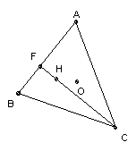

ABC is an acute-angled triangle with circumcenter O and orthocenter H. AO = AH. Find all possible values for the angle A.
Solution

Let the altitude from C be CF and the circumradius be R. ∠HAF = 90o - B, so AF = AH sin B = R sin B. Hence CF = R sin B tan A. But ∠BOC = 2A, so BC = 2 R sin A, and CF = BC sin B = 2R sin A sin B. Hence cos A = ½. Hence A = 60o.

© John Scholes
jscholes@kalva.demon.co.uk
28 Dec 2002
Last corrected/updated 28 Dec 02